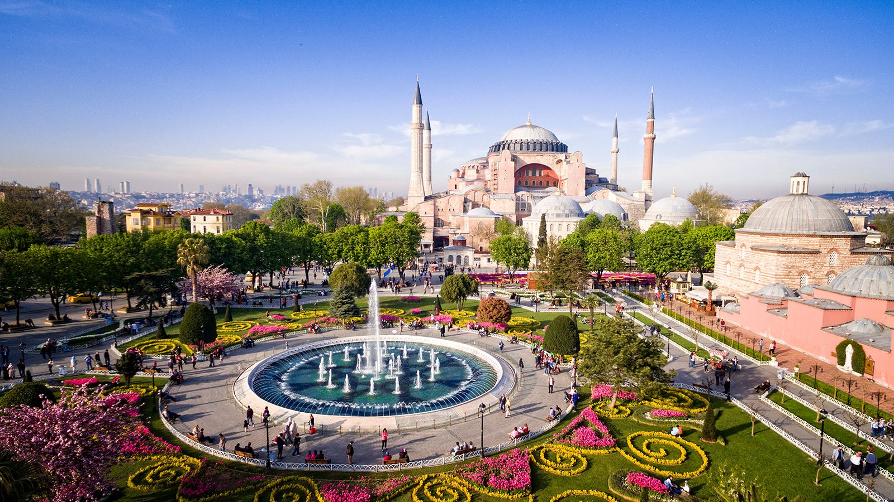

Bölgeleri Keşfet
- Marmara Bölgesi
- Ege Bölgesi
- Akdeniz Bölgesi
- İç Anadolu Bölgesi
- Karadeniz Bölgesi
- Doğu Anadolu Bölgesi
- Güneydoğu Anadolu Bölgesi

Marmara Bölgesi
Tarihin ve kıtaların buluştuğu nokta. İstanbul'un eşsiz boğazından, Bursa'nın yeşiline, Çanakkale'nin destansı topraklarına uzanan bir kültür mozaiği.
Bölgeye Git